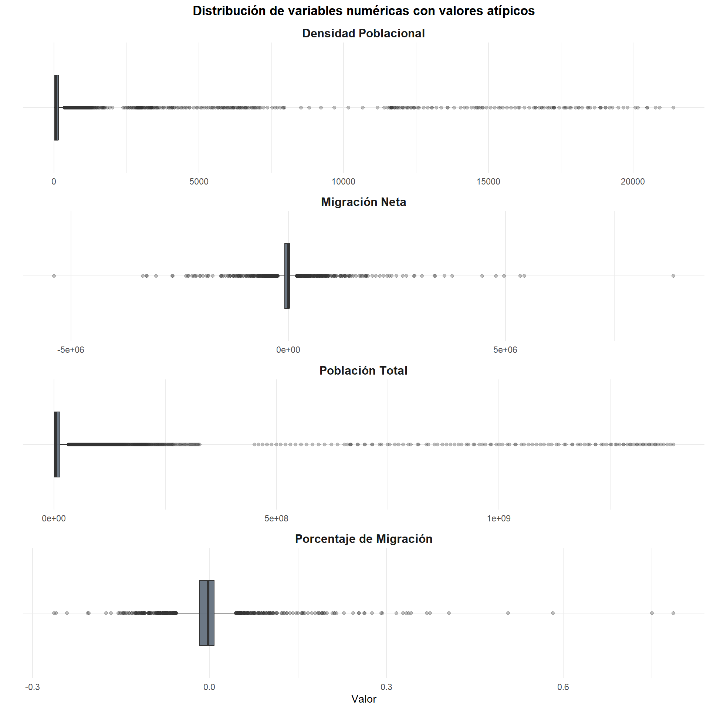

Capítulo 3 Limpieza y Preparación de Datos
Antes de proceder con el análisis exploratorio, es fundamental realizar una limpieza de los datos para garantizar la calidad y confiabilidad de los resultados. En esta sección se documentan todas las transformaciones aplicadas al dataset original.
3.1 Verificación de Duplicados
Se encontraron 0 filas duplicadas en el dataset.
No se encontraron duplicados. No se requiere acción.
La verificación de duplicados es un paso crítico en cualquier EDA. En datasets del Banco Mundial, los duplicados son raros pero pueden ocurrir por errores en la descarga o fusión de fuentes.
3.2 Corrección de Tipos de Datos
Verificamos que cada variable tenga el tipo de dato correcto y realizamos las conversiones necesarias.
tipos_antes <- data.frame(
Variable = names(df),
Tipo = sapply(df, class)
)
kable(tipos_antes, row.names = FALSE, caption = "Tipos de datos antes de la conversión")| Variable | Tipo |
|---|---|
| country | character |
| year | integer |
| population | numeric |
| pop_density | numeric |
| net_migration | numeric |
| migration_perc | numeric |
| iso3c | character |
| iso2c | character |
| region | character |
| adminregion | character |
| incomeLevel | character |
| lendingType | character |
| capitalCity | character |
| longitude | numeric |
| latitude | numeric |
# Asegurar que 'year' sea entero
df$year <- as.integer(df$year)
# Asegurar que las variables numéricas sean numéricas
df$population <- as.numeric(df$population)
df$pop_density <- as.numeric(df$pop_density)
df$net_migration <- as.numeric(df$net_migration)
df$migration_perc <- as.numeric(df$migration_perc)
df$longitude <- as.numeric(df$longitude)
df$latitude <- as.numeric(df$latitude)
tipos_despues <- data.frame(
Variable = names(df),
Tipo = sapply(df, class)
)
kable(tipos_despues, row.names = FALSE, caption = "Tipos de datos después de la conversión")| Variable | Tipo |
|---|---|
| country | character |
| year | integer |
| population | numeric |
| pop_density | numeric |
| net_migration | numeric |
| migration_perc | numeric |
| iso3c | character |
| iso2c | character |
| region | character |
| adminregion | character |
| incomeLevel | character |
| lendingType | character |
| capitalCity | character |
| longitude | numeric |
| latitude | numeric |
3.3 Limpieza de Variables Categóricas
Las variables categóricas pueden contener valores vacíos, espacios extra o inconsistencias que es necesario estandarizar.
# Eliminar espacios en blanco al inicio y final
df$country <- trimws(df$country)
df$iso3c <- trimws(df$iso3c)
df$iso2c <- trimws(df$iso2c)
df$region <- trimws(df$region)
df$incomeLevel <- trimws(df$incomeLevel)
df$adminregion <- trimws(df$adminregion)
df$lendingType <- trimws(df$lendingType)
df$capitalCity <- trimws(df$capitalCity)
# Conteo de valores vacíos
vacios <- data.frame(
Variable = c("country", "iso3c", "region", "incomeLevel", "adminregion"),
Vacios_o_NA = c(
sum(df$country == "" | is.na(df$country)),
sum(df$iso3c == "" | is.na(df$iso3c)),
sum(df$region == "" | is.na(df$region)),
sum(df$incomeLevel == "" | is.na(df$incomeLevel)),
sum(df$adminregion == "" | is.na(df$adminregion))
)
)
kable(vacios, row.names = FALSE, caption = "Valores vacíos o NA por variable categórica")| Variable | Vacios_o_NA |
|---|---|
| country | 0 |
| iso3c | 118 |
| region | 118 |
| incomeLevel | 118 |
| adminregion | 7434 |
# Reemplazar cadenas vacías por NA para tratamiento uniforme
df$region[df$region == ""] <- NA
df$incomeLevel[df$incomeLevel == ""] <- NA
df$adminregion[df$adminregion == ""] <- NA
df$lendingType[df$lendingType == ""] <- NA
df$capitalCity[df$capitalCity == ""] <- NAValores únicos de region:
## [1] "Aggregates" "East Asia & Pacific"
## [3] "Europe & Central Asia" "Latin America & Caribbean"
## [5] "Middle East & North Africa" "North America"
## [7] "South Asia" "Sub-Saharan Africa"Valores únicos de incomeLevel:
## [1] "Aggregates" "High income" "Low income"
## [4] "Lower middle income" "Upper middle income"3.4 Separación de Agregados y Países
El dataset incluye tanto países individuales como filas de agregados regionales (e.g., “World”, “East Asia & Pacific”) que el Banco Mundial calcula sumando los países individuales. Es fundamental separarlos para evitar doble conteo.
# Crear dataset solo de países (sin agregados)
df_paises <- df %>% filter(region != "Aggregates" & !is.na(region))
# Crear dataset de agregados para referencia
df_agregados <- df %>% filter(region == "Aggregates" | is.na(region))| Conjunto | Filas | Entidades únicas |
|---|---|---|
| Dataset completo | 15576 | 264 |
| Solo países | 12803 | 217 |
| Agregados | 2773 | 47 |
Entidades clasificadas como agregados:
## [1] "Arab World"
## [2] "Caribbean small states"
## [3] "Central Europe and the Baltics"
## [4] "Early-demographic dividend"
## [5] "East Asia & Pacific"
## [6] "East Asia & Pacific (excluding high income)"
## [7] "East Asia & Pacific (IDA & IBRD countries)"
## [8] "Euro area"
## [9] "Europe & Central Asia"
## [10] "Europe & Central Asia (excluding high income)"
## [11] "Europe & Central Asia (IDA & IBRD countries)"
## [12] "European Union"
## [13] "Fragile and conflict affected situations"
## [14] "Heavily indebted poor countries (HIPC)"
## [15] "High income"
## [16] "IBRD only"
## [17] "IDA & IBRD total"
## [18] "IDA blend"
## [19] "IDA only"
## [20] "IDA total"
## [21] "Late-demographic dividend"
## [22] "Latin America & Caribbean"
## [23] "Latin America & Caribbean (excluding high income)"
## [24] "Latin America & the Caribbean (IDA & IBRD countries)"
## [25] "Least developed countries: UN classification"
## [26] "Low & middle income"
## [27] "Low income"
## [28] "Lower middle income"
## [29] "Middle East & North Africa"
## [30] "Middle East & North Africa (excluding high income)"
## [31] "Middle East & North Africa (IDA & IBRD countries)"
## [32] "Middle income"
## [33] "North America"
## [34] "Not classified"
## [35] "OECD members"
## [36] "Other small states"
## [37] "Pacific island small states"
## [38] "Post-demographic dividend"
## [39] "Pre-demographic dividend"
## [40] "Small states"
## [41] "South Asia"
## [42] "South Asia (IDA & IBRD)"
## [43] "Sub-Saharan Africa"
## [44] "Sub-Saharan Africa (excluding high income)"
## [45] "Sub-Saharan Africa (IDA & IBRD countries)"
## [46] "Upper middle income"
## [47] "World"Si no se filtran los agregados, se inflarían artificialmente los totales de población y se distorsionarían todas las estadísticas descriptivas. A partir de este punto, el análisis a nivel de país utiliza exclusivamente
df_paises.
3.5 Tratamiento de Valores Faltantes (NAs)
3.5.1 Estrategia de Tratamiento
Definimos una estrategia diferenciada según la naturaleza de cada variable:
na_resumen_limpio <- data.frame(
Variable = names(df_paises),
NAs = colSums(is.na(df_paises)),
Porcentaje = round(colSums(is.na(df_paises)) / nrow(df_paises) * 100, 2)
)
na_resumen_limpio <- na_resumen_limpio[order(-na_resumen_limpio$Porcentaje), ]
kable(na_resumen_limpio, row.names = FALSE,
caption = "Valores faltantes en el dataset de países (después de limpieza inicial)")| Variable | NAs | Porcentaje |
|---|---|---|
| migration_perc | 10490 | 81.93 |
| net_migration | 10487 | 81.91 |
| adminregion | 4661 | 36.41 |
| pop_density | 641 | 5.01 |
| capitalCity | 354 | 2.76 |
| longitude | 354 | 2.76 |
| latitude | 354 | 2.76 |
| population | 108 | 0.84 |
| iso2c | 59 | 0.46 |
| country | 0 | 0.00 |
| year | 0 | 0.00 |
| iso3c | 0 | 0.00 |
| region | 0 | 0.00 |
| incomeLevel | 0 | 0.00 |
| lendingType | 0 | 0.00 |
| Variable | Estrategia | Justificación |
|---|---|---|
population |
Eliminar filas si es NA | Es la variable central del análisis; sin ella la observación carece de utilidad. |
pop_density |
Conservar NAs | Se filtrará en cada análisis específico. No es prudente imputar densidad sin conocer la superficie exacta. |
net_migration |
Conservar NAs | Los NAs son estructurales (datos quinquenales). Imputar sería introducir sesgo. |
migration_perc |
Conservar NAs | Derivada de net_migration, mismo razonamiento. |
longitude / latitude |
Conservar NAs | Solo faltan en agregados (ya filtrados). |
filas_antes <- nrow(df_paises)
# Eliminar filas sin población (variable esencial)
df_paises <- df_paises %>% filter(!is.na(population))
filas_despues <- nrow(df_paises)
filas_eliminadas <- filas_antes - filas_despuesSe eliminaron 108 filas por falta de datos de población. Quedan 12695 filas.
3.6 Detección de Valores Atípicos (Outliers)
Identificamos valores atípicos en las variables numéricas principales utilizando el criterio del rango intercuartílico (IQR).
detectar_outliers <- function(x, nombre_var) {
x_limpio <- x[!is.na(x)]
Q1 <- quantile(x_limpio, 0.25)
Q3 <- quantile(x_limpio, 0.75)
IQR_val <- Q3 - Q1
limite_inf <- Q1 - 1.5 * IQR_val
limite_sup <- Q3 + 1.5 * IQR_val
n_outliers <- sum(x_limpio < limite_inf | x_limpio > limite_sup)
data.frame(
Variable = nombre_var,
Q1 = round(Q1, 2),
Q3 = round(Q3, 2),
IQR = round(IQR_val, 2),
Lim_Inferior = round(limite_inf, 2),
Lim_Superior = round(limite_sup, 2),
N_Outliers = n_outliers,
Pct_Outliers = round(n_outliers / length(x_limpio) * 100, 2)
)
}outliers_resumen <- bind_rows(
detectar_outliers(df_paises$population, "population"),
detectar_outliers(df_paises$pop_density, "pop_density"),
detectar_outliers(df_paises$net_migration, "net_migration"),
detectar_outliers(df_paises$migration_perc, "migration_perc")
)
kable(outliers_resumen, caption = "Detección de valores atípicos por variable numérica")| Variable | Q1 | Q3 | IQR | Lim_Inferior | Lim_Superior | N_Outliers | Pct_Outliers | |
|---|---|---|---|---|---|---|---|---|
| 25%…1 | population | 462834.50 | 13119786.50 | 12656952.00 | -18522593.50 | 32105214.50 | 1733 | 13.65 |
| 25%…2 | pop_density | 20.25 | 153.07 | 132.81 | -178.97 | 352.29 | 1182 | 9.72 |
| 25%…3 | net_migration | -80263.00 | 27450.00 | 107713.00 | -241832.50 | 189019.50 | 502 | 21.70 |
| 25%…4 | migration_perc | -0.02 | 0.01 | 0.02 | -0.05 | 0.04 | 309 | 13.36 |
par(mfrow = c(2, 2), mar = c(4, 4, 3, 1))
boxplot(df_paises$population, main = "Población", col = "#3498DB",
outline = TRUE, horizontal = TRUE, log = "x")
boxplot(df_paises$pop_density[!is.na(df_paises$pop_density)],
main = "Densidad Poblacional", col = "#E67E22",
outline = TRUE, horizontal = TRUE, log = "x")
boxplot(df_paises$net_migration[!is.na(df_paises$net_migration)],
main = "Migración Neta", col = "#27AE60",
outline = TRUE, horizontal = TRUE)
boxplot(df_paises$migration_perc[!is.na(df_paises$migration_perc)],
main = "% Migración", col = "#8E44AD",
outline = TRUE, horizontal = TRUE)
Figure 3.1: Boxplots para visualización de valores atípicos
Las variables demográficas presentan un alto porcentaje de outliers según el criterio IQR, pero esto no significa que sean errores. En población, valores como los de China e India son extremos pero legítimos. De manera similar, ciudades-estado como Macao o Mónaco son outliers válidos en densidad. Decisión: se conservan todos los outliers dado que representan la variabilidad real del fenómeno demográfico mundial. Eliminarlos sería descartar información valiosa.
3.7 Validación de Rangos y Consistencia
validacion <- data.frame(
Verificacion = c(
"Años fuera de rango 1960-2025",
"Poblaciones negativas",
"Poblaciones iguales a 0",
"Densidades negativas",
"Latitudes fuera de [-90, 90]",
"Longitudes fuera de [-180, 180]"
),
Resultado = c(
sum(df_paises$year < 1960 | df_paises$year > 2025, na.rm = TRUE),
sum(df_paises$population < 0, na.rm = TRUE),
sum(df_paises$population == 0, na.rm = TRUE),
sum(df_paises$pop_density < 0, na.rm = TRUE),
sum(abs(df_paises$latitude) > 90, na.rm = TRUE),
sum(abs(df_paises$longitude) > 180, na.rm = TRUE)
)
)
kable(validacion, caption = "Validación de rangos en variables numéricas")| Verificacion | Resultado |
|---|---|
| Años fuera de rango 1960-2025 | 0 |
| Poblaciones negativas | 0 |
| Poblaciones iguales a 0 | 0 |
| Densidades negativas | 0 |
| Latitudes fuera de [-90, 90] | 0 |
| Longitudes fuera de [-180, 180] | 0 |
# Verificar que cada país tiene un solo código, región y nivel de ingreso
consistencia <- df_paises %>%
group_by(country) %>%
summarise(
n_codigos = n_distinct(iso3c),
n_regiones = n_distinct(region),
n_income = n_distinct(incomeLevel, na.rm = FALSE),
.groups = "drop"
) %>%
filter(n_codigos > 1 | n_regiones > 1 | n_income > 1)Todos los países tienen atributos consistentes (código, región, nivel de ingreso) a lo largo del tiempo.
La validación de rangos confirma que los datos no contienen errores evidentes como poblaciones negativas o coordenadas fuera de rango. La verificación de consistencia asegura que cada país mantiene los mismos atributos categóricos a lo largo del tiempo, lo cual es esencial para la integridad de los análisis longitudinales.
3.8 Resumen de la Limpieza
resumen_limpieza <- data.frame(
Concepto = c(
"Dataset original",
"Duplicados eliminados",
"Agregados separados",
"Filas sin población eliminadas",
"Outliers",
"Cadenas vacías",
"Dataset final (países)",
"Países únicos",
"Rango temporal"
),
Valor = c(
paste(nrow(df), "filas x", ncol(df), "columnas"),
as.character(n_duplicados),
paste(nrow(df_agregados), "filas"),
as.character(filas_eliminadas),
"Conservados (valores legítimos)",
"Convertidas a NA",
paste(nrow(df_paises), "filas x", ncol(df_paises), "columnas"),
as.character(n_distinct(df_paises$country)),
paste(min(df_paises$year), "-", max(df_paises$year))
)
)
kable(resumen_limpieza, caption = "Resumen del proceso de limpieza de datos")| Concepto | Valor |
|---|---|
| Dataset original | 15576 filas x 15 columnas |
| Duplicados eliminados | 0 |
| Agregados separados | 2773 filas |
| Filas sin población eliminadas | 108 |
| Outliers | Conservados (valores legítimos) |
| Cadenas vacías | Convertidas a NA |
| Dataset final (países) | 12695 filas x 15 columnas |
| Países únicos | 217 |
| Rango temporal | 1960 - 2018 |
La limpieza realizada es de tipo conservador, priorizando la preservación de la información sobre la eliminación de datos. Los principales cambios son la separación de agregados (para evitar doble conteo), la estandarización de valores vacíos, y la eliminación de observaciones sin la variable central (
population). El dataset resultante está listo para el análisis exploratorio.